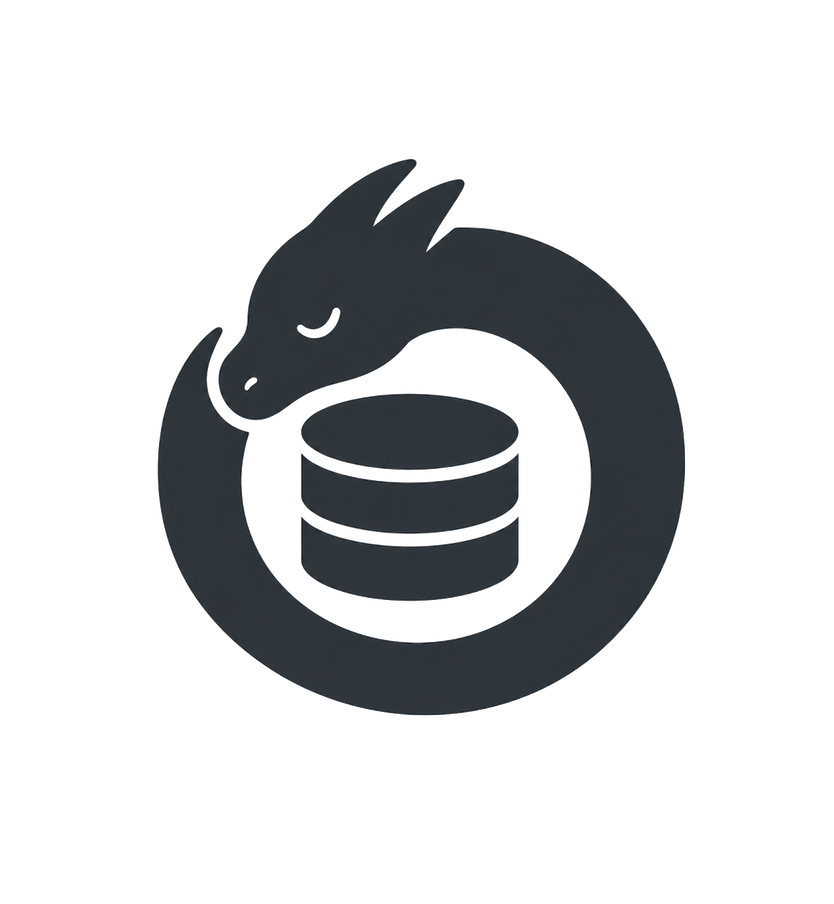

ra-yavuz / hydra-rag-hooks

hydra-rag-hooks v0.1.0
apt install. Type rag <q> in Claude Code OR Codex CLI. Done.
A UserPromptSubmit hook package for both Anthropic's Claude Code and OpenAI's Codex CLI. apt install hydra-rag-hooks wires it into Claude Code for every user on the machine; one codex plugin add per user enables it for Codex. The first rag inside any project folder fork-detaches a background indexer; the next rag <q> retrieves the top relevant chunks from a per-folder LanceDB index and prepends them to the prompt before the model sees it. Both CLIs share the same .hydra-index/ store, the same toggles, and the same MCP server. Local-first, deterministic, zero token overhead on prompts that do not start with the trigger.
Open source under the MIT License. Provided as is, no warranty: read the full disclaimer before installing. RAG retrieves text from local files and sends it to the third-party LLM provider (Anthropic for Claude Code, OpenAI for Codex CLI) when retrieval triggers.
Install
/etc/claude-code/managed-settings.json, and ships the Codex CLI plugin tree at /usr/lib/hydra-rag-hooks/codex-plugin/:
sudo bash -c 'set -e; install -m 0755 -d /etc/apt/keyrings && curl -fsSL https://ra-yavuz.github.io/apt/pubkey.gpg -o /etc/apt/keyrings/ra-yavuz.gpg && echo "deb [signed-by=/etc/apt/keyrings/ra-yavuz.gpg] https://ra-yavuz.github.io/apt stable main" > /etc/apt/sources.list.d/ra-yavuz.list && apt update && apt install -y hydra-rag-hooks'Claude Code: from your next session, rag <question> in any project folder works. No further setup.
Codex CLI: Codex has no managed-settings system-wide path, so each user runs once:
codex plugin add /usr/lib/hydra-rag-hooks/codex-pluginThe hook needs fastembed, lancedb, and pyarrow at runtime. None of the three are packaged for Debian, so the apt install does not pull them. The first rag tells you about a one-time pip install --user fastembed lancedb pyarrow if they are missing.
How it feels
A prompt that does not start with the trigger keyword (rag:, /rag, or rag@<tag>:) falls through to Claude Code unchanged. Zero token overhead on non-RAG turns; no extra tool definitions in every system prompt; no model-decides debugging.
Two surfaces, both on by default
v0.6 ships both surfaces in one package: the keyword hook for the cheap, deterministic, zero-overhead path; and a bundled MCP server for the model-decides path. Use either, or both. Toggle either off any time.
- Keyword hook (cheap, deterministic). Type
rag <q>. The hook embeds the query, retrieves chunks from a local LanceDB index, prepends them to your prompt. No tool-call round trip; no context injection on prompts that do not need RAG; no MCP tool definitions bloating every system prompt. - MCP server (hydra-rag-mcp). Claude calls
rag_searchwhen it judges retrieval would help and the user did not type the keyword (or the keyword retrieval came up thin and Claude wants a follow-up search with a refined query). Saves tokens by letting one Claude turn refine its own retrieval instead of asking you to start over. - Auto-rag mode. Type
/rag-toggleinside Claude Code (orcrh rag onfrom a shell) and every prompt becomes arag <prompt>query, no keyword needed. Slash commands and very short prompts pass through untouched. Off by default; toggle once and it sticks across sessions.
The hook self-installs the MCP server entry into the user's ~/.claude.json on first run (idempotent; refuses to write if the file is unparseable, so existing user state cannot be destroyed), and self-installs the /rag-toggle slash command into ~/.claude/commands/rag-toggle.md with a clear marker so user edits survive future upgrades. apt postinst handles the system-wide hook wiring; per-user pieces happen lazily on the next hook invocation.
How the original "no MCP" stance from v0.5 evolved: the keyword hook is still the primary, cheapest path. The MCP server is opt-out (default on) because the same retrieval index can answer one extra question Claude sometimes notices it needs without forcing the user to start a new turn. That saves tokens. Compose with model-decides peers like shinpr/mcp-local-rag, ItMeDiaTech/rag-cli, or zilliztech/claude-context: they each carry their own indexes and tool definitions, hydra-rag-hooks adds three small ones (rag_search, rag_status, rag_list_stores) on top of the keyword path.
How indexing handles changes over time
- First
rag <q>in a folder: auto-indexes that folder's project root in the background (~30s for a small repo, longer for big ones). Your current turn is not blocked. - Subsequent
rag <q>turns: if the index is more than 5 minutes old, the hook fork-detaches an incremental refresh. Only changed files re-embed (matched on size + mtime); typical refresh of a repo where you edited 3 files re-embeds 3 files. - Branch switches and bulk changes: every file's mtime changes, so the next refresh re-embeds everything that switched. Expected behavior; the current
rag <q>uses whatever is in the index right now while the refresh runs in the background.
The index lives at <project-root>/.hydra-index/, alongside your code. Copy a project folder to another machine and the index moves with it. Drop the directory to force a full rebuild.
Auto-index safety rails
Auto-index is the default but it never indexes places it shouldn't:
- Hard refusal on
$HOME, every direct child of$HOME(~/.config,~/Downloads,~/.ssh),/,/etc,/var,/tmp,/usr,/opt,/root,/boot,/sys,/proc,/dev. - Project marker required: a
.git,pyproject.toml,package.json,Cargo.toml,go.mod,Makefile, etc. within six ancestors of cwd. Drop a.hydra-rag-allowfile to opt in a folder explicitly. - Size cap: 20,000 files or 500 MB of indexable content. Override with
CLAUDE_RAG_HOOK_BYPASS_SIZE_CAP=1. - Existing skip-list still applies (lockfiles, binaries, archives, media, model weights, files >1 MB,
node_modules,.venv, etc.).
When auto-index is refused, the hook prints a one-line stderr explanation and your prompt passes through unchanged. The hook never fails silently and never indexes silently.
Trigger forms
| Trigger | Effect |
|---|---|
rag <text> | Retrieve from the project root's index. Default form. Auto-indexes on first use. |
rag: <text> | Same. The colon form is equivalent and predates the no-colon form. |
/rag <text> | Same, slash-command flavour. |
rag (alone) | Print index status. If no index exists yet, kick off indexing. Ends the turn without invoking the model (zero tokens). Same for rag status and rag:. |
/rag-toggle | Toggle auto-rag mode (every prompt becomes a rag query, no keyword needed). Different from bare rag, which is the status report. Equivalent shell command: crh rag toggle. |
rag@<tag>: <text> | Federate retrieval across every store carrying <tag>. Bypasses auto-index; you have to have indexed the stores. |
rag@all: <text> | Federate across every registered store. |
The bare rag form is a CLI command, not a question for Claude. The hook returns a decision: "block" envelope so the model is not invoked: the user sees the status text and the turn ends with zero tokens spent. If no index exists yet, the same bare rag also fork-detaches the indexer.
The no-colon form (lax_trigger) is on by default. Set lax_trigger: false in ~/.config/hydra-llm/rag-hooks/config.yaml to require the colon if you hit a false positive.
Auto-rag mode and MCP toggles
Two persistent toggles live in $XDG_STATE_HOME/hydra-rag-hooks/toggles.json:
- auto-rag (default off): every prompt becomes a
ragquery, no keyword needed. Slash commands and very short prompts pass through untouched. Toggle inside Claude Code with/rag-toggle, or from a shell withcrh rag on|off|toggle|status. - mcp (default on): the bundled MCP server is wired into
~/.claude.jsonso Claude can callrag_searchwhen it judges retrieval would help. Turn off withcrh mcp off; the entry stays in~/.claude.jsonwith aCLAUDE_RAG_MCP_DISABLED=1env block, so the toggle is fully reversible from the same place. Turn on withcrh mcp on.
The MCP server exposes three tools: rag_search(query, scope?, top_k?, tag?) for retrieval, rag_status(scope?) for index health, rag_list_stores() for an inventory of registered project indexes. The tool descriptions tell Claude when to call them and when to skip the round trip.
What you actually get
Zero-touch install
apt postinst merges a hook entry into /etc/claude-code/managed-settings.json, the documented system-wide settings file Claude Code reads with the highest precedence for every user. No CLI subcommands, no settings to edit, no per-user setup. apt remove takes the entry out.
Auto-index on first use
The first rag <q> in a project folder fork-detaches a background indexer; the next one retrieves normally. Subsequent turns trigger throttled incremental refreshes so the index stays current as you edit.
Keyword-triggered, deterministic
Type rag, get retrieval. Don't, and the hook is a no-op. No model-decides debugging, no MCP tool definitions in every system prompt, no per-turn round trip on prompts that do not need RAG.
Per-folder LanceDB index
Stored at <project-root>/.hydra-index/ alongside your code. Copy a project to another machine, the index comes along. Re-running incrementally: only changed files re-embed.
Pluggable embedders
Default fastembed with BAAI/bge-small-en-v1.5 since v0.5.0 (33M params, 384 dim, ~67MB on disk). Override to nomic-ai/nomic-embed-text-v1.5 (137M params, 768 dim, 8192-token context) or any OpenAI-compatible /v1/embeddings server, or reuse a hydra-llm embedder by id.
Warm embedder daemon
A small per-user process keeps the embedder loaded behind a ~/.cache/hydra-llm/rag-hooks/embedder.sock Unix domain socket. First triggered turn pays cold-start; subsequent turns are sub-second. Idles out after 30 min by default.
Cross-folder federation
rag@work: <q> retrieves across every store you tagged work. rag@all: <q> hits every registered store. Reciprocal Rank Fusion picks the best chunks across the merged lists.
Optional hydra-llm bridges
Standalone is the default. Optional opt-in: reuse a hydra-llm embedder so the two tools stop duplicating ~80 MB of ONNX cache, and read existing .hydra-index/ stores. Neither tool triggers the other; each keeps its own indexes.
Share indexes (export / import)
crh export bundles a project's index into a portable .crh.tar.zst. A colleague cds into their checkout, runs crh import <file>, and skips the indexing cost: the next rag <q> retrieves immediately. Bundle contains embeddings, chunked text, and file manifest only; no source code.
MCP server (model-decided retrieval)
v0.6 ships a stdio MCP server alongside the keyword hook. Claude calls rag_search when it judges retrieval would help and the user did not type the keyword (or the keyword retrieval was thin). On by default; toggle with crh mcp off.
Auto-rag mode (no keyword needed)
Type /rag-toggle inside Claude Code to flip auto-rag on. Every subsequent prompt becomes a rag <prompt> query, no keyword required. Slash commands and very short prompts pass through untouched. Persistent across sessions.
Survives Claude Code updates
Claude Code's self-update never touches /etc/claude-code/managed-settings.json or ~/.claude.json, so the hook entry and MCP server entry stay wired. The hook also re-registers itself on every run as a belt-and-braces idempotent recovery.
Configuration (optional)
Single YAML file at ~/.config/hydra-llm/rag-hooks/config.yaml. Defaults are inlined; a missing file is not an error. Override only what you need:
triggers:
- "rag:"
- "/rag"
lax_trigger: true # accept "rag <q>" without the colon
top_k: 5
retrieval:
timeout_seconds: 8 # max time the hook will hold Claude on retrieval
embedder:
kind: fastembed
model: BAAI/bge-small-en-v1.5 # default since v0.5.0
query_prefix: "Represent this sentence for searching relevant passages: "
document_prefix: "" # BGE: no prefix on documents
fastembed_batch_size: 4
# To use the previous default (nomic, higher quality, 4x more RAM):
# model: nomic-ai/nomic-embed-text-v1.5
# query_prefix: "search_query: "
# document_prefix: "search_document: "
# Or for an OpenAI-compatible local server:
# kind: openai-compatible
# base_url: http://127.0.0.1:19080
# Or to reuse a hydra-llm embedder by id:
# kind: hydra-llm
# hydra_id: nomic-embed-text
chunking:
target_chars: 1500
overlap_chars: 200
walker:
max_file_size_mb: 1
respect_gitignore: true
daemon:
idle_ttl_seconds: 1800
enabled: true
notifications:
on_index_complete: true # desktop notification (notify-send) on first indexOperator CLI: crh
apt install puts a crh binary on $PATH. The hook handles everything inside Claude Code; crh is for the operator side: watch indexing progress, run blocking refreshes for scripts, query the store, manage the auto-refresh daemon, diagnose the install.
crh status # one-liner state of the cwd's index
crh status --watch # live-redrawing progress display until done
crh status --all # state of every registered store
crh index [path] # blocking initial index, with progress bar
crh refresh [path] # blocking incremental refresh
crh query "retry policy" # one-shot retrieval to stdout
crh ls # list registered stores
crh tag <path> work # tag for `rag@work: <q>` federation
crh forget <path> # delete an index, with confirmation
crh doctor # diagnose: model cache, embedder, hook wiring
crh rag on|off|toggle|status # auto-rag mode (every prompt becomes a `rag` query)
crh mcp on|off|toggle|status # MCP server (model-decided retrieval)
crh export [path] [-o out] # bundle the project's index into a portable archive
crh import <bundle> [path] # install a bundle from a colleagueShare an index between machines
Indexing a large monorepo can take minutes to hours. If a colleague has already indexed it, they can hand you the result so you do not have to pay the cost again. The bundle holds embeddings, chunked text, and the file manifest; no source code (the trust boundary is still the source repo).
# Sender. From inside the indexed project:
cd ~/regurio-monorepo
crh export
# -> exported /home/alice/regurio-monorepo to
# ./regurio-monorepo.BAAI-bge-small-en-v1.5.v1.20260509-093850.crh.tar.zst (71.4 MB)
# Or pick where the file lands:
crh export --output ~/share/
# Receiver. apt install hydra-rag-hooks, cd into their checkout, run import:
cd ~/regurio-monorepo
crh import ~/Downloads/regurio-monorepo.BAAI-bge-small-en-v1.5.v1.20260509-093850.crh.tar.zst
# -> imported into /home/bob/regurio-monorepo/.hydra-index
# registered in stores.json; type `rag <question>` to use it.The receiver's current working directory is the destination, not anything baked into the bundle (the bundle records the sender's project name for display only). The receiver's checkout can be at a different path, or even renamed; pass an explicit second argument to override. The next rag <q> retrieves from the borrowed index immediately. Embedder compatibility is preserved per-index via meta.yaml: a bundle built with a different embedder than the receiver's local default still works (the retrieval path picks the right embedder per-index), and crh import prints a one-line heads-up when that happens.
Format is tar+zstd when zstd is on PATH, falling back to tar+gzip. crh import refuses to overwrite an existing populated .hydra-index/ without --force, validates path-traversal entries, and registers the new store in ~/.local/state/hydra-llm/rag-hooks/stores.json.
Auto-refresh daemon (off by default, opt-in):
crh refresher start # systemctl --user enable --now
crh refresher stop
crh auto on [path] # opt this project in
crh auto off [path] # opt outThe refresher is a per-user systemd unit running at Nice=19, CPUSchedulingPolicy=idle, IOSchedulingClass=idle, with a 60-second post-change quiet period and a hard 5-minute floor between refreshes per project. It only watches projects you explicitly opted in (a marker file inside the index dir).
Resilience. Indexer runs persist their file manifest on a throttled checkpoint cadence (every 16 files / 2 seconds), atomically. If the indexer is killed mid-flight (kill, OOM, system crash, power loss), crh refresh resumes from the last checkpoint instead of re-indexing already-completed files. crh status reports the [interrupted] state when this happens so you can decide between resuming and starting over.
How it works under the hood
A few mechanics worth knowing, especially if the tool surprises you.
- The hook is synchronous. Claude Code calls it on every prompt and waits for it to finish before sending the prompt to Claude. The retrieval path is wall-clock-capped at
retrieval.timeout_seconds(default 8s); cold-start fastembed model loads can exceed that on the first call after boot, so the hook gives up cleanly and Claude answers without retrieved context. Retry usually works (1-3s). - Indexing is fork-detached. The hook forks a child, calls
setsid, redirects stdio to~/.cache/hydra-llm/rag-hooks/indexer.log, and the parent returns to Claude immediately. Cancelling your Claude prompt does not kill the indexer: it has already detached. To stop one:pgrep -af claude_rag_hookandkill. - Progress and discoverability. While indexing runs,
<scope>/.hydra-index/.progressgets updated; bareragreports it. Non-rag prompts also get a small "[hydra-rag-hooks] heads-up: still indexing..." banner prepended so Claude (and you) are not in the dark. On first-index completion, the hook firesnotify-sendif it is on PATH (refreshes stay quiet).
Pairs with hydra-llm
hydra-llm is the sibling project for running local LLMs with RAG built in. The two tools are designed to play together but are fully independent: each writes to its own index folder and neither auto-triggers the other.
Two opt-in integration points:
- Embedder reuse. Set
embedder.kind: hydra-llmandembedder.hydra_id: <id>. The hook reads~/.config/hydra-llm/embedders.yaml, askshydra-llm rag info <id>for the runtime port, and calls/v1/embeddings. The hook never starts or stops the container; you runhydra-llmnormally. - Store reuse (read-only). If a folder has a
.hydra-index/instead of (or alongside) a.hydra-index/, the hook reads it transparently when walking up looking for an index. hydra-llm users do not have to re-index for Claude Code.
What does not happen automatically:
- Indexing one folder with hydra-llm does not create a
.hydra-index/there. hydra-rag-hooks only writes to its own directory. - Indexing with hydra-rag-hooks does not create a
.hydra-index/. The interop is one-way: this hook reads hydra's stores; hydra does not (currently) read this hook's stores. - Running
hydra-llmagainst project A while you have a Claude session in project B has no effect on B's index. Indexes are per-folder and isolated.
Privacy
- The hook reads files inside any project folder it auto-indexes and stores chunked text plus embeddings of those files at
<project-root>/.hydra-index/. - The hook injects retrieved chunks into the prompt that is sent to Anthropic. Indexed material is shipped to Claude when retrieval triggers. Indexes never leave your machine on their own, but retrieval results do, because that is the entire point. Audit what your project folders contain.
- The warm embedder daemon runs as your user. The socket lives under
~/.cache/hydra-llm/rag-hooks/with mode 0700 / 0600. - No telemetry. No analytics. No auto-update calls. The hook does not phone home.
Where things live
/usr/lib/hydra-rag-hooks/hydra-rag-hooks-hook | the binary Claude Code invokes (off $PATH; you never type it directly) |
/etc/claude-code/managed-settings.json | where the hook entry lives, system-wide, written by apt postinst |
~/.config/hydra-llm/rag-hooks/config.yaml | user config (optional, defaults inlined) |
~/.cache/hydra-llm/rag-hooks/embedder.sock | warm embedder daemon UDS |
~/.cache/hydra-llm/rag-hooks/indexer.log | indexer stderr / tracebacks |
~/.local/state/hydra-llm/rag-hooks/stores.json | per-user registry of indexed folders |
<project-root>/.hydra-index/ | per-folder LanceDB + meta.yaml + files.json + .progress |
Platform support
Linux is the primary target (Debian, Ubuntu, Fedora, Arch). The hook works anywhere Claude Code itself runs, with the caveat that auto-wiring of /etc/claude-code/managed-settings.json is shipped only via the Debian / Ubuntu apt package; on other systems you wire it into ~/.claude/settings.json by hand. Source install (git clone) ships the hydra-rag-hooks-admin tool that does the same merge against any settings path you point it at.
Full disclaimer
This software is a hook into Claude Code that reads files inside any project directory it auto-indexes and stores chunked text plus embeddings of them at <directory>/.hydra-index/, runs a small persistent embedder daemon as your user, and (when retrieval triggers) injects retrieved chunks into the prompt that Claude Code sends to Anthropic. The apt package merges a hook entry into /etc/claude-code/managed-settings.json, which Claude Code reads for every user on the machine. It is provided as is, without warranty of any kind, express or implied, including but not limited to merchantability, fitness for a particular purpose, and noninfringement.
By installing or running this software you accept that:
- You alone are responsible for any damage to your hardware, data, network, or system.
- The author(s) and contributors are not liable for any harm, data loss, hardware failure, security incident, model output, voided warranty, or other damages, however caused.
- This tool is specifically designed to send local content to a third-party LLM (Anthropic's Claude). When auto-index runs, the hook reads files in your project folder and stores embeddings of them locally. When retrieval triggers, retrieved chunks are sent to Anthropic. The auto-index safety rails ($HOME / system-path refusal, project-marker requirement, 20k-file / 500MB cap) are belt and braces, not a guarantee. Audit what your project folders contain.
- The apt postinst writes
/etc/claude-code/managed-settings.json, which Claude Code reads for every user on the machine. If you do not want machine-wide effect, do not install via apt; usehydra-rag-hooks-admin installagainst your own~/.claude/settings.jsoninstead. - The warm embedder daemon runs as your user; a misconfigured config file or a malicious process able to write to it could be used to exfiltrate retrieval results.
- LLM outputs are unreliable. Claude can hallucinate, repeat training data, give incorrect medical/legal/financial advice, and produce harmful or biased content. RAG reduces hallucination but does not eliminate it; the model can still misquote retrieved chunks. Do not rely on Claude's answers for safety-critical decisions.
- Embedder model weights downloaded by the default
fastembedbackend (or by the optional hydra-llm backend) are governed by their own upstream licenses. You are responsible for complying with each model's license.
If you do not accept these terms, do not install or run this software.
Full legal license: MIT.
Source
- Code: github.com/ra-yavuz/hydra-rag-hooks
- Releases: github.com/ra-yavuz/hydra-rag-hooks/releases
- Design notes: DESIGN.md
- Other ra-yavuz projects: ra-yavuz.github.io
© 2026 Ramazan Yavuz. MIT-licensed. No warranty.
This page does not use cookies, tracking, or analytics. Outbound links lead to third-party websites outside our control; we are not liable for their content or privacy practices.